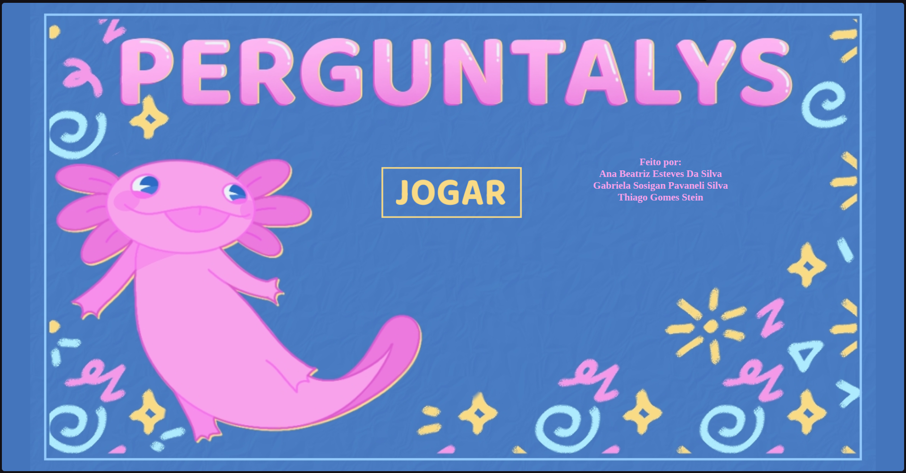

Acadêmico
NPI
Na UniFil, o Núcleo de Práticas de Informática (NPI) é um grupo de estudos dedicado ao aprendizado de conteúdos relacionados à área da computação sem necessidade do acompanhamento de professores, permitindo que o aluno estude de forma autodidata conteúdos da área do seu interesse e participe de projetos da faculdade, ou projetos montados pelos próprios alunos.
Projetos que eu participo
Pensamento Computacional: O Pensamento Computacional é um projeto da UniFil direcionado aos alunos do Ensino Médio com interesse na área da computação, é um projeto de participação totalmente gratuita, onde eu participo voluntariamente como monitora de sala, auxiliando os alunos e tirando dúvidas durante as aulas da turma básica e também da turma intermediária. Na básica os alunos vêem conteúdos de nível mais simples e iniciante, como o início de desenvolvimento web, enquanto a turma intermediária possui conteúdos um pouco mais avançados, de Git e Github até linguagens de programação como Python. Semanalmente faço relatórios das aulas que participei, todos postados no Google Sites.
Grupo de Jogos: É um grupo de estudos criado por alunos com interesse na área de desenvolvimento de jogos. Nesse grupo, participo do time de design, criando sprites e assets em pixel art feitos no Aseprite. Atualmente, estou trabalhando nos sprites de um mini boss para nosso jogo.
Grupo de Pesquisa de IA: Grupo de pesquisa focado em aprender sobre Inteligência Artificial, criado pelo professor Ricardo Petri é um grupo onde consigo aprimorar meus conhecimentos sobre o tema e descobrir coisas novas sobre a área em cada reunião.
Projetos da Faculdade
Perguntalys: um jogo de lógica de dez fases, hospedado no Github. Toda a parte visual do jogo é de minha autoria. Clique na imagem abaixo se tiver interesse em jogar o jogo.
